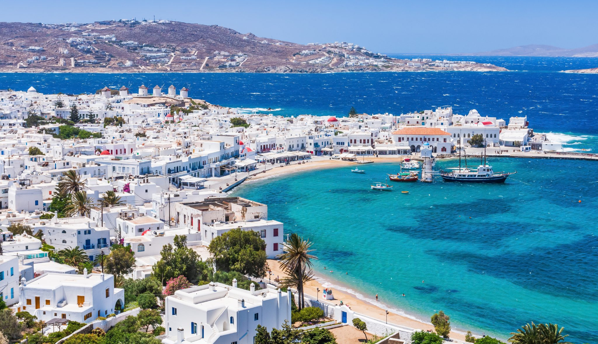

¿Que és Windmill Isle?
Windmill Isle es una hermosa isla mediterránea rodeada por el mar.
Sus principales características son los tradicionales
molinos de viento, las casas blancas y azules,
las calles estrechas y los paisajes costeros.
Es un destino ideal para quienes buscan disfrutar
de la
naturaleza, las playas, la cultura y la historia local.
